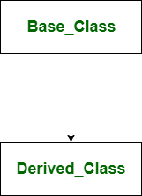
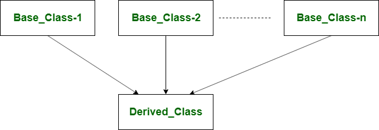

6. Inheritance, Private Variables, Fixed attributes, Costumize Exceptions#
6.1. Inheritance#
Inheritance is the capability of one class to derive or inherit the properties from another class. The benefits of inheritance are:
It represents real-world relationships well.
It provides reusability of a code. We don’t have to write the same code again and again. Also, it allows us to add more features to a class without modifying it.
It is transitive in nature, which means that if class B inherits from another class A, then all the subclasses of B would automatically inherit from class A.
It will help you to understand how Sklearn Class works.
The base model is called Base or Super class.
Different forms of Inheritance:
Single inheritance: When a child class inherits from only one parent class, it is called single inheritance. We saw an example above.
Multiple inheritance: When a child class inherits from multiple parent classes, it is called multiple inheritance. Unlike Java and like C++, Python supports multiple inheritance. We specify all parent classes as a comma-separated list in the bracket.
6.1.1. Single Inheritance #
In single inheritance, the derived class uses the features or members of the single base class. 
# Base model
# We are going to define a family class
class Family(object):
# Constructor
# define initial attributes
# Assume all members of a family share
# lastname and nationality
def __init__( self, last_name , nationality ):
self.last_name = last_name
self.nationality = nationality
# # Upper case Last name
def upper_lt_name( self, x ):
return x.upper()
# Print last name
def pr_LastName( self ):
up_last_name = self.upper_lt_name( self.last_name )
print( f"The { up_last_name } family." )
# Print Nationality
def pr_Natioanlity( self ):
print( f"This family is {self.nationality}" )
# Now, we generate a class for family member
# based on Family
class FamMember( Family ):
def __init__( self, last_name , nationality, name , age, school ):
self.name = name
self.age = age
self.school = school
# invoking the __init__ of the parent class
# we are executing the Family class inside the FamMember Class
# It allow us to get all methods and attributes
Family.__init__(self, last_name , nationality )
def presentation( self ):
up_last_name = self.upper_lt_name( self.last_name ) # Here we are using the parent class
up_name = self.upper_lt_name( self.name )
up_school = self.upper_lt_name( self.school )
print( f"My name is { up_name } { up_last_name }. \nI am {self.nationality}. I studied at {up_school}. ")
member1_family1 = FamMember( last_name = "Azabache" , nationality = "Peruvian", name = "Carlos" , age = 26, school = "Franco Peruano" )
member1_family1.presentation()
My name is CARLOS AZABACHE.
I am Peruvian. I studied at FRANCO PERUANO.
family1 = Family( last_name = "Azabache", nationality = "Peruvian")
family1.pr_LastName()
The AZABACHE family.
family1.pr_Natioanlity()
This family is Peruvian
We can see our defined methods in the code above. Now, we are going to generate a FamMember class. You’ll see that this class have the same methods as Family class. It inherits the methods defined in Family Class.
member1_family1 = FamMember( last_name = "Azabache" , nationality = "Peruvian", name = "Carlos" , age = 26 )
---------------------------------------------------------------------------
TypeError Traceback (most recent call last)
Cell In[7], line 1
----> 1 member1_family1 = FamMember( last_name = "Azabache" , nationality = "Peruvian", name = "Carlos" , age = 26 )
TypeError: FamMember.__init__() missing 1 required positional argument: 'school'
member1_family1.presentation()
My name is Carlos AZABACHE.
I am Peruvian
6.1.2. Multiple Inheritance #
Multiple inheritance is one in which the derived class acquires two or more base classes. In multiple inheritance, the derived class are allowed to use the joint features of the inherited base classes. Sklearn uses multiple inheritance.

# Base model
# We are going to define a family class
class Family(object):
# Constructor
def __init__( self, last_name , nationality ):
self.last_name = last_name
self.nationality = nationality
# Upper case Last name
def upper_lt_name( self, x ):
return x.upper()
# Print last name
def pr_LastName( self ):
up_last_name = self.upper_lt_name( self.last_name )
print( f"The { up_last_name } family." )
# Print Nationality
def pr_Natioanlity( self ):
print( f"This family is {self.nationality}" )
# Now, we generate a class
# to define the job of a family member
class Job(object):
# Constructor
# define initial attributes
# Assume all members of a family share
# lastname and nationality
def __init__( self, job ):
self.job = job
def up_work( self ):
return self.job.upper()
class FamMember( Family , Job ):
def __init__( self, last_name , nationality, name , age , job ):
self.name = name
self.age = age
# invoking the __init__ of the parent class
Family.__init__(self, last_name , nationality )
Job.__init__(self, job )
def presentation( self ):
up_last_name = self.upper_lt_name( self.last_name )
job_up = self.up_work()
print( f"My name is { self.name } { up_last_name }. \nI am {self.nationality}. \nI work as a {job_up}.")
member1_family1 = FamMember(
last_name = "Azabache" ,
nationality = "Peruvian",
name = "Carlos" ,
age = 26 ,
job = "Research Assistant"
)
member1_family1.presentation()
My name is Carlos AZABACHE.
I am Peruvian.
I work as a RESEARCH ASSISTANT.
Deeper Topics about Class#
6.2. Private Variables#
Private variables allow us to specify variables that we do not want to be changed by users or project partners.
“Private” instance variables are variables that cannot be accessed except from inside an object. However, there is no existence of “Private” variables. In python, a convention is being followed by most Python code and coders i.e., a name prefixed with an underscore, For e.g. _diploma should be treated as a non-public part of the API or any Python code, whether it is a function, a method, or a data member.
Example#
class MyFirstClass:
def __init__( self, name, age ):
self.name = name
self.age = age
# best way to define a method
def print_name( self ):
print( f'I am { self.name }.' )
class1 = MyFirstClass( "Jose", 35 )
class1.print_name()
I am Jose.
We can access this variable and change its value.
class1.name = "Andres"
class1.print_name()
I am Andres.
Using private variables. __name is a private variable.
class MyFirstClass:
def __init__( self, name, age ):
self.__name = name
self.age = age
# best way to define a method
def print_name( self ):
print( f'I am { self.__name }.' )
class2 = MyFirstClass( "Jose", 35 )
class2.print_name()
I am Jose.
class2.__name
---------------------------------------------------------------------------
AttributeError Traceback (most recent call last)
<ipython-input-15-8662921a8c1c> in <module>
----> 1 class2.__name
AttributeError: 'MyFirstClass' object has no attribute '__name'
In the above example, the class variable __name is not accessible outside the class. we can see al the attributes and methods using bult-in function dir.
dir( class2 )
['_MyFirstClass__name',
'__class__',
'__delattr__',
'__dict__',
'__dir__',
'__doc__',
'__eq__',
'__format__',
'__ge__',
'__getattribute__',
'__gt__',
'__hash__',
'__init__',
'__init_subclass__',
'__le__',
'__lt__',
'__module__',
'__name',
'__ne__',
'__new__',
'__reduce__',
'__reduce_ex__',
'__repr__',
'__setattr__',
'__sizeof__',
'__str__',
'__subclasshook__',
'__weakref__',
'age',
'print_name']
class2.__name = "Andres"
class2.print_name()
I am Jose.
class2.__name
'Andres'
Here, the output of print_name was not modified. However, we add a new attribute “__name” to the class. We are going to deal with this later.
class2.name
'Andres'
6.2.1. Name Mangling #
It help us to deal with private variables. In name mangling process any identifier with two leading underscore and one trailing underscore is textually replaced with _classname__identifier where classname is the name of the current class. Name mangling takes place at class creation time; any functions that refer to mangled names are adjusted as well. The name mangling process helps to access the class variables from outside the class. The class variables can be accessed by adding _classname to it. The name mangling is closest to private not exactly private.
Names, in a class, with a leading underscore are simply to indicate to other programmers that the attribute or method is intended to be private. However, nothing special is done with the name itself.
class3 = MyFirstClass( "Doris", 28 )
dir( class3 )
['_MyFirstClass__name',
'__class__',
'__delattr__',
'__dict__',
'__dir__',
'__doc__',
'__eq__',
'__format__',
'__ge__',
'__getattribute__',
'__gt__',
'__hash__',
'__init__',
'__init_subclass__',
'__le__',
'__lt__',
'__module__',
'__ne__',
'__new__',
'__reduce__',
'__reduce_ex__',
'__repr__',
'__setattr__',
'__sizeof__',
'__str__',
'__subclasshook__',
'__weakref__',
'age',
'print_name']
As you can see, there is an attribute named as _MyFirstClass__name. We can access to this variable and modify it.
class3.print_name()
I am Doris.
class3._MyFirstClass__name = "Rebeca"
class3.print_name()
I am Rebeca.
We can modify the private variable using names created by name mangling. This is the reason why we say that there is no existence of “Private” instance variables in Python like in other programing languages like Jave, C++. However, we use this standardized Python way to generate private variables to communicate other programmers which variables should not be modified.
6.2.2. _Single Leading Underscores #
One underline at the beginning of a method, function, or data member means you shouldn’t access this method because it’s not part of the API.
# Python code to illustrate how double
# underscore at the beginning works
class Geek:
def _single_method(self):
pass
def __double_method(self): # for mangling
pass
class Pyth(Geek):
def __double_method(self): # for mangling
pass
dir(Pyth)
['_Geek__double_method',
'_Pyth__double_method',
'__class__',
'__delattr__',
'__dict__',
'__dir__',
'__doc__',
'__eq__',
'__format__',
'__ge__',
'__getattribute__',
'__gt__',
'__hash__',
'__init__',
'__init_subclass__',
'__le__',
'__lt__',
'__module__',
'__ne__',
'__new__',
'__reduce__',
'__reduce_ex__',
'__repr__',
'__setattr__',
'__sizeof__',
'__str__',
'__subclasshook__',
'__weakref__',
'_single_method']
dir(Geek)
['_Geek__double_method',
'__class__',
'__delattr__',
'__dict__',
'__dir__',
'__doc__',
'__eq__',
'__format__',
'__ge__',
'__getattribute__',
'__gt__',
'__hash__',
'__init__',
'__init_subclass__',
'__le__',
'__lt__',
'__module__',
'__ne__',
'__new__',
'__reduce__',
'__reduce_ex__',
'__repr__',
'__setattr__',
'__sizeof__',
'__str__',
'__subclasshook__',
'__weakref__',
'_single_method']
6.2.3. __Double Leading Underscores #
Double underscore will mangle the attribute names of a class to avoid conflicts of attribute names between classes.
# Python code to illustrate how double
# double underscore at the beginning works
class Diploma:
def _single_method(self):
pass
def __double_method(self): # for mangling
pass
class Pyth(Diploma):
def __double_method(self): # for mangling
pass
dir(Pyth)
['_Diploma__double_method',
'_Pyth__double_method',
'__class__',
'__delattr__',
'__dict__',
'__dir__',
'__doc__',
'__eq__',
'__format__',
'__ge__',
'__getattribute__',
'__gt__',
'__hash__',
'__init__',
'__init_subclass__',
'__le__',
'__lt__',
'__module__',
'__ne__',
'__new__',
'__reduce__',
'__reduce_ex__',
'__repr__',
'__setattr__',
'__sizeof__',
'__str__',
'__subclasshook__',
'__weakref__',
'_single_method']
# Python code to illustrate how double
# single underscore at the beginning does not works
class Diploma:
def _single_method(self):
pass
def _double_method(self): # for mangling
pass
class Pyth(Diploma):
def __double_method(self): # for mangling
pass
dir( Pyth )
['_Pyth__double_method',
'__class__',
'__delattr__',
'__dict__',
'__dir__',
'__doc__',
'__eq__',
'__format__',
'__ge__',
'__getattribute__',
'__gt__',
'__hash__',
'__init__',
'__init_subclass__',
'__le__',
'__lt__',
'__module__',
'__ne__',
'__new__',
'__reduce__',
'__reduce_ex__',
'__repr__',
'__setattr__',
'__sizeof__',
'__str__',
'__subclasshook__',
'__weakref__',
'_double_method',
'_single_method']
As you can see, the Pyth class does not inherit private _double_method.
6.3. Fixed attributes#
We comment that we can can dynamically add attributes to objects of classes. However, it is not recomended. Most libraries do not have this option. Let’s look at a numpy array.
A = np.arange( 7, 35, 5)
A
array([ 7, 12, 17, 22, 27, 32])
A.new_attr = "New attribute"
---------------------------------------------------------------------------
AttributeError Traceback (most recent call last)
<ipython-input-172-512d4d9583bb> in <module>
----> 1 A.new_attr = "New attribute"
AttributeError: 'numpy.ndarray' object has no attribute 'new_attr'
As you can see, it is not possible to add more attributes. It is not recomended since users or project partners may change the original values of these attributes or methods.
# Base model
# We are going to define a family
# Imagine family
class Family(object):
# Constructor
def __init__( self, last_name , nationality ):
self.last_name = last_name
self.nationality = nationality
# Upper case Last name
def upper_lt_name( self, x ):
return x.upper()
# Print last name
def pr_LastName( self ):
up_last_name = self.upper_lt_name( self.last_name )
print( f"The { up_last_name } family." )
# Print Nationality
def pr_Natioanlity( self ):
print( f"This family is {self.nationality}" )
std1 = Family( "Azabache" , "Peruvian")
# We define a new function
def lower_case( x ):
x1 = x.lower()
return x1
# We change the `upper_lt_name` function
std1.upper_lt_name = lower_case
std1.pr_LastName()
The azabache family.
We can change methods and attributes of a class object if we do not fix them. We use __slots__ to fix them.
The special attribute __slots__ allows you to explicitly state which instance attributes you expect your object instances to have, with the expected results:
faster attribute access.
space savings in memory.
The space savings is from
When we design a class, we can use slots to prevent the dynamic creation of attributes.
# Base model
# We are going to define a family
# Imagine family
class Family(object):
__slots__ = [ 'last_name', 'nationality', ]
# Constructor
def __init__( self, last_name , nationality ):
self.last_name = last_name
self.nationality = nationality
# Upper case Last name
def upper_lt_name( self, x ):
return x.upper()
# Print last name
def pr_LastName( self ):
up_last_name = self.upper_lt_name( self.last_name )
print( f"The { up_last_name } family." )
# Print Nationality
def pr_Natioanlity( self ):
print( f"This family is {self.nationality}" )
std1 = Family( "Azabache" , "Peruvian")
## add a new attribute
std1.number_children = 8
---------------------------------------------------------------------------
AttributeError Traceback (most recent call last)
<ipython-input-202-53f13afe38d0> in <module>
1 ## add a new attribute
----> 2 std1.number_children = 8
AttributeError: 'Family' object has no attribute 'number_children'
We can not add more attributes.
# We define a new function
def lower_case( x ):
x1 = x.lower()
return x1
# We change the `upper_lt_name` function
std1.upper_lt_name = lower_case
---------------------------------------------------------------------------
AttributeError Traceback (most recent call last)
<ipython-input-204-f35240125f21> in <module>
1 # We change the `upper_lt_name` function
----> 2 std1.upper_lt_name = lower_case
AttributeError: 'Family' object attribute 'upper_lt_name' is read-only
Additionally, we can not add or modify methods.
6.4. Costumize Exceptions with Python#
Python has numerous built-in exceptions that force your program to output an error when something in the program goes wrong. However, sometimes you may need to create your own custom exceptions that serve your purpose.
# define Python user-defined exceptions
# we create custom exceptions using the base class Exception
class LastNameisLower( Exception ):
"""Raised when the last name string is lower case"""
pass
class LastNameisUpper(Exception):
"""Raised when the last name string is upper case"""
pass
# Base model
# We are going to define a family
# Imagine family
class Family(object):
__slots__ = [ 'last_name', 'nationality', ]
# Constructor
def __init__( self, last_name , nationality ):
if last_name[ 0 ].islower():
raise LastNameisLower( f"The first letter in last_name is lowercase. \nPlease, the first letter must be uppercase.")
for i in range( len( last_name ) - 1 ):
str1 = last_name[ i + 1 ]
if str1.isupper():
raise LastNameisUpper( f"Index { i +1 } in last_name is uppercase. \nPlease, only the first letter must be uppercase.")
self.last_name = last_name
self.nationality = nationality
# Print last name
def pr_LastName( self ):
print( f"The { self.last_name } family." )
# Print Nationality
def pr_Natioanlity( self ):
print( f"This family is {self.nationality}" )
std1 = Family( "AzaBache" , "Peruvian")
---------------------------------------------------------------------------
LastNameisUpper Traceback (most recent call last)
<ipython-input-240-24225eceac5e> in <module>
----> 1 std1 = Family( "AzaBache" , "Peruvian")
<ipython-input-235-560a2ad23198> in __init__(self, last_name, nationality)
19 if str1.isupper():
20
---> 21 raise LastNameisUpper( f"Index { i +1 } in last_name is uppercase. \nPlease, only the first letter must be uppercase.")
22
23
LastNameisUpper: Index 3 in last_name is uppercase.
Please, only the first letter must be uppercase.
std1 = Family( "azabache" , "Peruvian")
---------------------------------------------------------------------------
LastNameisLower Traceback (most recent call last)
<ipython-input-239-e3041492e7a0> in <module>
----> 1 std1 = Family( "azabache" , "Peruvian")
<ipython-input-235-560a2ad23198> in __init__(self, last_name, nationality)
10
11 if last_name[ 0 ].islower():
---> 12 raise LastNameisLower( f"The first letter in last_name is lowercase. \nPlease, the first letter must be uppercase.")
13
14
LastNameisLower: The first letter in last_name is lowercase.
Please, the first letter must be uppercase.
6.5. References#
https://bytes.com/topic/python/answers/43335-init-method-raising-exceptions
https://stackoverflow.com/questions/472000/usage-of-slots
https://www.geeksforgeeks.org/private-variables-python/
https://www.programiz.com/python-programming/user-defined-exception
Excersise#
Importing a Dictionary#
import pickle
import pandas as pd
import numpy as np
The places_result dictionary stores information from a Google API request that aims to geolocate all the National Identity Management Commission establishments in Nigeria. We want to store the results in a Pandas DataFrame. We want to keep the name of the establishment and its coordiantes.
dictionary_places = open( r"..\_data\places_result", "rb")
places_result = pickle.load( dictionary_places )
# It is a dictionary
type( places_result )
dict
places_result['results'][0]['name']
'National Identity Management Commission'
len(places_result['results'])
20
# See all the establishments
i = 0
while True:
try:
i = i + 1
print( places_result['results'][i]['name'] )
except:
break
National Identity Management Commission (Nimc)
National Identity Management Commission NIMC
National Identity Management Commission
National Identity Management Commission (Nimc)
National Identity Management Commission
National Identity Management Commission
National Identity Management Commission (Nimc)
National Identity Management Commission
National Identity Management Commission (Nimc)
National Identity Management Commission (Nimc)
National Identity Management Center
National Identity Management Commision (NIMC) Lagos
National Identity Management Commission
National Identity Management Commission (Nimc)
National Identity Management Commission Umuahia
National Identity Management Commission
National Identity Management Commission (Nimc)
National Identity Management Commission, Northwest Zonal Office
National Identity Management Commission Nimc
places_result is a nested dictionary. It is composed of a list, dictionary, and a dictionary.
First, we are going to do it using a for loop. We are not going to use a function. After we get our expected results, we will define a function.
We can do it lists#
places_result['results'][0]['geometry']['location']['lat']
places_result['results'][0]['geometry']['location']['lng']
7.4549606
from tqdm import tqdm
# Lists
latitudes = []
longitudes = []
institutions = []
# define all the results
results = places_result[ 'results' ]
len(results)
20
# loop para guardar cada uno de los elementos
for element in tqdm( range( 0 , len( results ) ) ):
# latitude
lat = results[ element ]['geometry']['location']['lat']
# Longitude
lng = results[ element ]['geometry']['location']['lng']
# nombre de la institution
institution = results[ row ]['name']
# Save results
latitudes.append( lat )
longitudes.append( lng )
institutions.append( institution )
# Diccionario
final_result = { 'Institution': institutions, 'Latitud' : latitudes, 'Longitud' : longitudes }
# Dataframe
df_result = pd.DataFrame( final_result )
df_result
100%|███████████████████████████████████████████████████████████████████████████████| 20/20 [00:00<00:00, 20140.72it/s]
| Institution | Latitud | Longitud | |
|---|---|---|---|
| 0 | National Identity Management Commission Nimc | 9.065977 | 7.454961 |
| 1 | National Identity Management Commission Nimc | 8.450151 | 4.542503 |
| 2 | National Identity Management Commission Nimc | 8.505730 | 8.531775 |
| 3 | National Identity Management Commission Nimc | 9.058854 | 7.468078 |
| 4 | National Identity Management Commission Nimc | 9.895973 | 8.931434 |
| 5 | National Identity Management Commission Nimc | 9.892295 | 8.917566 |
| 6 | National Identity Management Commission Nimc | 9.857233 | 7.967972 |
| 7 | National Identity Management Commission Nimc | 7.711656 | 8.526523 |
| 8 | National Identity Management Commission Nimc | 11.989994 | 8.489165 |
| 9 | National Identity Management Commission Nimc | 10.310332 | 9.826602 |
| 10 | National Identity Management Commission Nimc | 10.592473 | 7.449456 |
| 11 | National Identity Management Commission Nimc | 5.471781 | 7.008344 |
| 12 | National Identity Management Commission Nimc | 6.617086 | 3.357951 |
| 13 | National Identity Management Commission Nimc | 6.460106 | 7.579009 |
| 14 | National Identity Management Commission Nimc | 9.076770 | 7.493777 |
| 15 | National Identity Management Commission Nimc | 5.502502 | 7.517956 |
| 16 | National Identity Management Commission Nimc | 4.822006 | 7.007972 |
| 17 | National Identity Management Commission Nimc | 11.988203 | 8.496804 |
| 18 | National Identity Management Commission Nimc | 10.543617 | 7.460988 |
| 19 | National Identity Management Commission Nimc | 4.849608 | 7.052736 |
We can do it using iteration over rows of a DataFrame#
df2 = pd.DataFrame( columns = ['Institution','Latitude','Longitud'] )
results = places_result['results']
for fila in tqdm(range( 0 , len( results ) )):
df2.loc[fila] = [results[ fila ]['name'], \
results[ fila ]['geometry']['location']['lat'], \
results[ fila ]['geometry']['location']['lng']]
df2
100%|█████████████████████████████████████████████████████████████████████████████████| 20/20 [00:00<00:00, 284.38it/s]
| Institution | Latitude | Longitud | |
|---|---|---|---|
| 0 | National Identity Management Commission | 9.065977 | 7.454961 |
| 1 | National Identity Management Commission (Nimc) | 8.450151 | 4.542503 |
| 2 | National Identity Management Commission NIMC | 8.505730 | 8.531775 |
| 3 | National Identity Management Commission | 9.058854 | 7.468078 |
| 4 | National Identity Management Commission (Nimc) | 9.895973 | 8.931434 |
| 5 | National Identity Management Commission | 9.892295 | 8.917566 |
| 6 | National Identity Management Commission | 9.857233 | 7.967972 |
| 7 | National Identity Management Commission (Nimc) | 7.711656 | 8.526523 |
| 8 | National Identity Management Commission | 11.989994 | 8.489165 |
| 9 | National Identity Management Commission (Nimc) | 10.310332 | 9.826602 |
| 10 | National Identity Management Commission (Nimc) | 10.592473 | 7.449456 |
| 11 | National Identity Management Center | 5.471781 | 7.008344 |
| 12 | National Identity Management Commision (NIMC) ... | 6.617086 | 3.357951 |
| 13 | National Identity Management Commission | 6.460106 | 7.579009 |
| 14 | National Identity Management Commission (Nimc) | 9.076770 | 7.493777 |
| 15 | National Identity Management Commission Umuahia | 5.502502 | 7.517956 |
| 16 | National Identity Management Commission | 4.822006 | 7.007972 |
| 17 | National Identity Management Commission (Nimc) | 11.988203 | 8.496804 |
| 18 | National Identity Management Commission, North... | 10.543617 | 7.460988 |
| 19 | National Identity Management Commission Nimc | 4.849608 | 7.052736 |
def dict_output( dictionary , output = 'tuple'):
# key results
results = dictionary['results']
# Lists
latitudes = []
longitudes = []
inst = []
# iterate over values and store in lists
# we are going to use lists apporach
for fila in range( 0 , len( results ) ):
# latitude
lat = results[ fila ]['geometry']['location']['lat']
# Longitude
lng = results[ fila ]['geometry']['location']['lng']
# nombre de la institucion
institucion = results[ fila ]['name']
# Save results
latitudes.append( lat )
longitudes.append( lng )
inst.append( institucion )
# Store all values in
# dictionary
results_dict = { 'Instituciones': institutions, 'Latitud' : latitudes, 'Longitud' : longitudes }
# pandas
results_pd = pd.DataFrame( results_dict )
# tuple
results_tuple = ( latitudes , longitudes , inst )
# We can use return with if condition
if output == 'dataframe':
return results_pd
elif output == 'dictionary':
return results_dict
elif output == 'tuple':
return results_tuple
else:
raise Exception( f'''The output value ({output}) is wrong. \nYou can only use `tuple`, `dataframe`, or `dictionary` as argument variables.''' )
tuple_result = dict_output( places_result, output = "tuple" )
tuple_result[2]
['National Identity Management Commission',
'National Identity Management Commission (Nimc)',
'National Identity Management Commission NIMC',
'National Identity Management Commission',
'National Identity Management Commission (Nimc)',
'National Identity Management Commission',
'National Identity Management Commission',
'National Identity Management Commission (Nimc)',
'National Identity Management Commission',
'National Identity Management Commission (Nimc)',
'National Identity Management Commission (Nimc)',
'National Identity Management Center',
'National Identity Management Commision (NIMC) Lagos',
'National Identity Management Commission',
'National Identity Management Commission (Nimc)',
'National Identity Management Commission Umuahia',
'National Identity Management Commission',
'National Identity Management Commission (Nimc)',
'National Identity Management Commission, Northwest Zonal Office',
'National Identity Management Commission Nimc']
dict_output( places_result, output = "dataframe" )
| Instituciones | Latitud | Longitud | |
|---|---|---|---|
| 0 | National Identity Management Commission Nimc | 9.065977 | 7.454961 |
| 1 | National Identity Management Commission Nimc | 8.450151 | 4.542503 |
| 2 | National Identity Management Commission Nimc | 8.505730 | 8.531775 |
| 3 | National Identity Management Commission Nimc | 9.058854 | 7.468078 |
| 4 | National Identity Management Commission Nimc | 9.895973 | 8.931434 |
| 5 | National Identity Management Commission Nimc | 9.892295 | 8.917566 |
| 6 | National Identity Management Commission Nimc | 9.857233 | 7.967972 |
| 7 | National Identity Management Commission Nimc | 7.711656 | 8.526523 |
| 8 | National Identity Management Commission Nimc | 11.989994 | 8.489165 |
| 9 | National Identity Management Commission Nimc | 10.310332 | 9.826602 |
| 10 | National Identity Management Commission Nimc | 10.592473 | 7.449456 |
| 11 | National Identity Management Commission Nimc | 5.471781 | 7.008344 |
| 12 | National Identity Management Commission Nimc | 6.617086 | 3.357951 |
| 13 | National Identity Management Commission Nimc | 6.460106 | 7.579009 |
| 14 | National Identity Management Commission Nimc | 9.076770 | 7.493777 |
| 15 | National Identity Management Commission Nimc | 5.502502 | 7.517956 |
| 16 | National Identity Management Commission Nimc | 4.822006 | 7.007972 |
| 17 | National Identity Management Commission Nimc | 11.988203 | 8.496804 |
| 18 | National Identity Management Commission Nimc | 10.543617 | 7.460988 |
| 19 | National Identity Management Commission Nimc | 4.849608 | 7.052736 |
dict_output( places_result, output = "dictionary" )
{'Instituciones': ['National Identity Management Commission Nimc',
'National Identity Management Commission Nimc',
'National Identity Management Commission Nimc',
'National Identity Management Commission Nimc',
'National Identity Management Commission Nimc',
'National Identity Management Commission Nimc',
'National Identity Management Commission Nimc',
'National Identity Management Commission Nimc',
'National Identity Management Commission Nimc',
'National Identity Management Commission Nimc',
'National Identity Management Commission Nimc',
'National Identity Management Commission Nimc',
'National Identity Management Commission Nimc',
'National Identity Management Commission Nimc',
'National Identity Management Commission Nimc',
'National Identity Management Commission Nimc',
'National Identity Management Commission Nimc',
'National Identity Management Commission Nimc',
'National Identity Management Commission Nimc',
'National Identity Management Commission Nimc'],
'Latitud': [9.065977,
8.450151,
8.50573,
9.058854499999999,
9.895973,
9.892294699999999,
9.8572331,
7.711655800000001,
11.9899944,
10.310332,
10.592473,
5.4717813,
6.617086,
6.460105899999999,
9.07677,
5.5025021,
4.822006,
11.988203,
10.5436173,
4.8496083],
'Longitud': [7.4549606,
4.542503,
8.531774799999999,
7.468077600000001,
8.931434,
8.9175658,
7.967971899999998,
8.5265235,
8.4891647,
9.826602,
7.449456,
7.0083439,
3.357951,
7.579008999999999,
7.493777,
7.517955600000001,
7.0079724,
8.496804,
7.4609879,
7.0527365]}
dict_output( places_result, output = "list" )
---------------------------------------------------------------------------
Exception Traceback (most recent call last)
<ipython-input-145-e91397d3200f> in <module>
----> 1 dict_output( places_result, output = "list" )
<ipython-input-140-830bbfba4732> in dict_output(dictionary, output)
47
48 else:
---> 49 raise Exception( f'''The output value ({output}) is wrong. \nYou can only use `tuple`, `dataframe`, or `dictionary` as argument variables.''' )
Exception: The output value (list) is wrong.
You can only use `tuple`, `dataframe`, or `dictionary` as argument variables.
dict_output( places_result )
([9.065977,
8.450151,
8.50573,
9.058854499999999,
9.895973,
9.892294699999999,
9.8572331,
7.711655800000001,
11.9899944,
10.310332,
10.592473,
5.4717813,
6.617086,
6.460105899999999,
9.07677,
5.5025021,
4.822006,
11.988203,
10.5436173,
4.8496083],
[7.4549606,
4.542503,
8.531774799999999,
7.468077600000001,
8.931434,
8.9175658,
7.967971899999998,
8.5265235,
8.4891647,
9.826602,
7.449456,
7.0083439,
3.357951,
7.579008999999999,
7.493777,
7.517955600000001,
7.0079724,
8.496804,
7.4609879,
7.0527365],
['National Identity Management Commission',
'National Identity Management Commission (Nimc)',
'National Identity Management Commission NIMC',
'National Identity Management Commission',
'National Identity Management Commission (Nimc)',
'National Identity Management Commission',
'National Identity Management Commission',
'National Identity Management Commission (Nimc)',
'National Identity Management Commission',
'National Identity Management Commission (Nimc)',
'National Identity Management Commission (Nimc)',
'National Identity Management Center',
'National Identity Management Commision (NIMC) Lagos',
'National Identity Management Commission',
'National Identity Management Commission (Nimc)',
'National Identity Management Commission Umuahia',
'National Identity Management Commission',
'National Identity Management Commission (Nimc)',
'National Identity Management Commission, Northwest Zonal Office',
'National Identity Management Commission Nimc'])